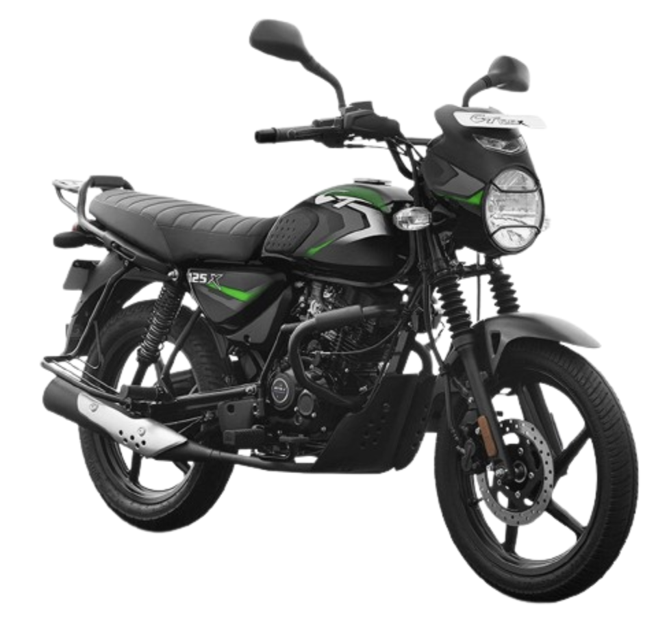
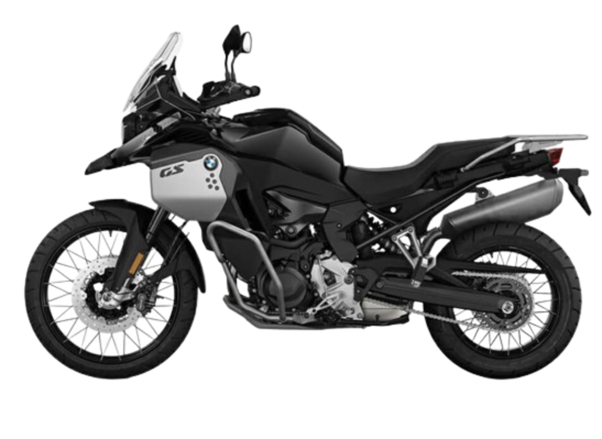
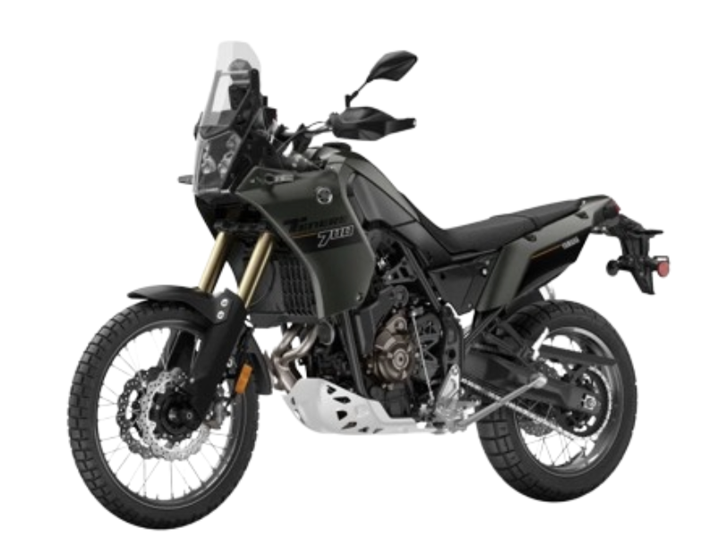
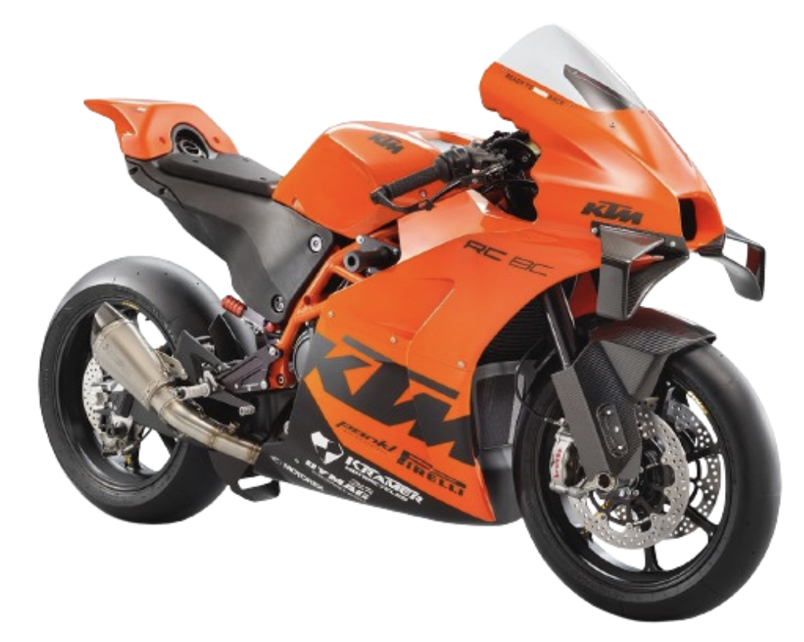

Welcome to MotoSphere
Innovation is taking center stage with groundbreaking developments across different riding segments. From the pioneering Bajaj CNG Motorcycle, heralded as the world's first CNG-powered bike promising significant emissions reductions and cost savings, to the rugged Yamaha Ténéré 700 (2024) with its enhanced features for adventurous souls, and the formidable BMW F 900 GS Ride offering technological sophistication for the avid explorer. Not to be outdone, the track-focused KTM RC 8C sets new benchmarks with its potent engine and cutting-edge electronics, catering to enthusiasts seeking uncompromising performance on the circuit. Join us as we delve into these exciting new offerings shaping the future of motorcycling.
Bajaj CNG Motorcycle
This is the world's first CNG-powered motorcycle. It features a compressed natural gas (CNG) fuel system, providing significant reductions in carbon monoxide, CO2 emissions, and non-methane hydrocarbons compared to petrol engines. The bike is expected to offer a 50-65% reduction in fuel costs and is likely to be a 110cc equivalent, with potential specs including 17-inch wheels, semi-digital instrument panel, and LED headlight.
Yamaha Ténéré 700 (2024)
This adventure bike includes updates like a new 5-inch color TFT display, new LED turn signals, and a three-mode selectable ABS. It is powered by a 689cc liquid-cooled inline twin-cylinder engine, offering a good balance of power and off-road capability. The bike will be available in Team Yamaha Blue and Shadow Gray.
BMW F 900 GS
The 2024 BMW F 900 GS Ride is a formidable adventure touring motorcycle, powered by a potent liquid-cooled 895cc parallel-twin engine that churns out approximately 99 horsepower. It boasts a sturdy tubular steel frame, complemented by adjustable front forks and rear suspension, ensuring optimal handling and comfort across diverse terrains. Equipped with advanced features like ABS, traction control, multiple riding modes, and a TFT display, the F 900 GS Ride offers both technological sophistication and practicality for adventurous riders.
KTM RC 8C
The KTM RC 8C is a track-oriented motorcycle featuring an 889cc liquid-cooled V-twin engine producing 128 horsepower, mated to a 6-speed gearbox with a slipper clutch. It utilizes a lightweight tubular steel trellis frame and high-end WP suspension (APEX 43mm fork, APEX shock absorber) for precise handling. Brembo radial-mount calipers and advanced Bosch electronics including cornering ABS, Motorcycle Traction Control (MTC), Motor Slip Regulation (MSR), and Quickshifter+ enhance its performance capabilities on the circuit.
